The judge sees everything.
A cheap model can inspect every response, but its ratings are only proxy measurements. On HelpSteer2, the model systematically underestimated defects.
SCALE ≠ ACCURACY
Don't just ask the model. Audit the judge.
AI evaluators can process thousands of answers at low cost—but their scores may be consistently wrong. MetaAudit combines LLM-as-a-judge evaluation, random reference audits, and prediction-powered inference to measure defect rates with defensible uncertainty and fewer trusted labels.
Evidence scope. These values come from the completed v2/v3 studies described in the supplied textbooks. Repeated audits were simulated by sampling existing reference labels; the reported gains are study- and judge-specific, not universal guarantees. Limitations & validity ↗
Model-generated quality scores can look objective. Their bias, however, may be systematic—and a very large evaluation run cannot make that bias disappear.
A cheap model can inspect every response, but its ratings are only proxy measurements. On HelpSteer2, the model systematically underestimated defects.
A random sample of trusted labels reveals where the judge disagrees with humans. Because the sample is random, this correction targets the whole fixed dataset.
MetaAudit tests not just a point estimate but uncertainty coverage, label budgets, model-dependent failure modes, and decision thresholds.
Can a high-volume LLM evaluator be made statistically trustworthy using a small human audit—without paying to label everything?
The full-population judge provides an inexpensive prediction. A probability-based human audit measures and corrects its error, then the evaluation reports statistical uncertainty.
Begin with a fixed dataset, a clearly operationalized defect label, and a population rate to estimate. All subsequent claims depend on that definition.
The estimand must be clear before a confidence interval can mean anything.
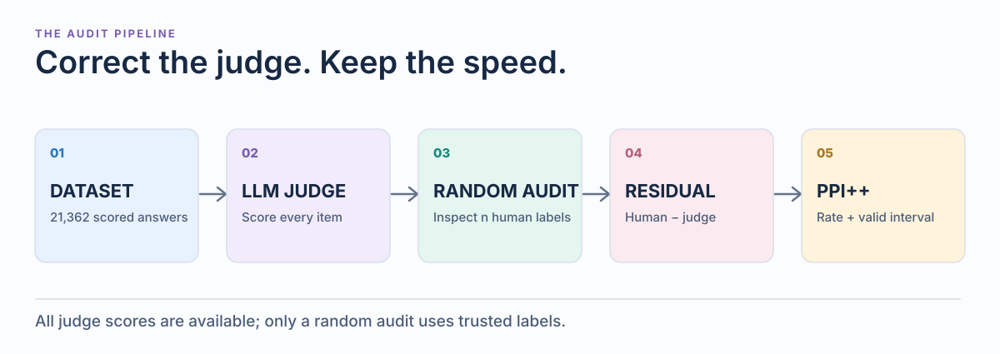
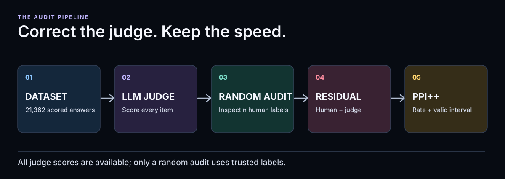
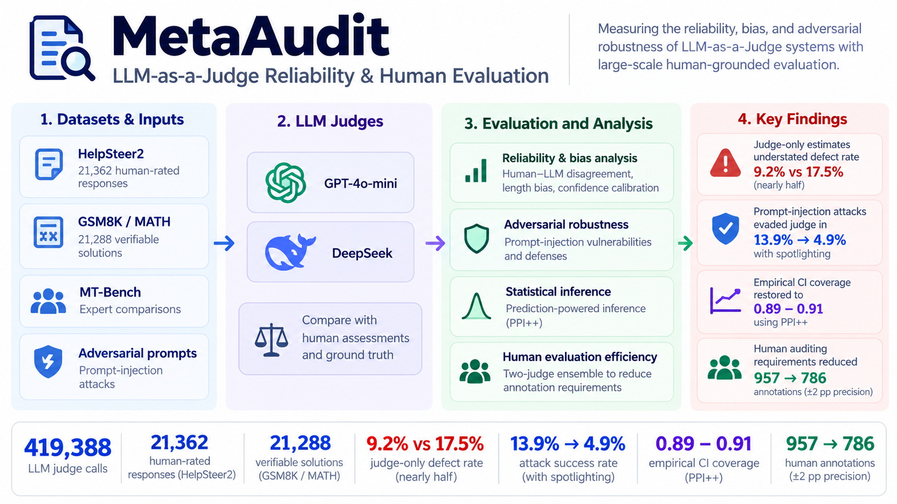
An interactive explanation of the PPI++ estimator. Moving λ changes the amount of assistance taken from the judge; validity comes from the random audit, not from a magically perfect classifier.
Start with the sample’s human rate, then correct it using how the judge’s average differs between the entire population and the audited sample.
PPI++ seeks lower variance over repeated audits. For an individual sample, the assisted estimate need not be closer to the truth.
Numbers below reproduce the textbook's 10-item worked example, not a live HelpSteer2 sample.
40.0% + 1.00 × (38.0% − 42.0%) = 36.0%
The complete 10-item example has a 30% reference defect rate. These single-sample estimates are imperfect: the value of PPI++ is reduced sampling variability over many possible audits when the judge tracks the labels.

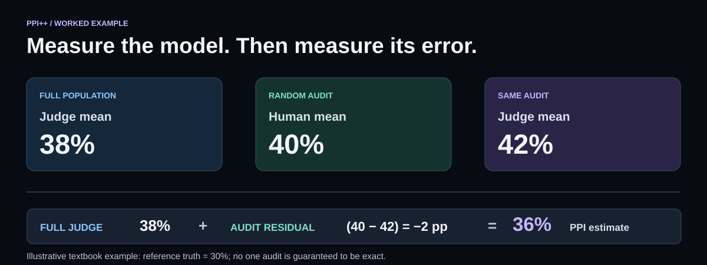
Nonrandom label selection can miss precisely the type of item that confuses the judge. A random audit supports correction of the whole population, not just the convenient cases.
At λ = 0, the estimate uses only the human sample. At λ = 1, it uses the full difference estimator. The study estimates λ from the audit; the manual slider is only a teaching aid.
The experiments deliberately contrast human judgments, automatically checkable mathematics, and expert pairwise preferences. Their error mechanisms should not be treated as interchangeable.
21,362 responses with multi-annotator 0–4 ratings. The main binary defect is consensus helpfulness ≤ 1; that defines the 17.5% reference rate.
21,288 generated solutions in v3, with answers compared to official solutions. A reported 18.4% were marked incorrect by the automated checker.
Expert pairwise preference votes allow judge–expert agreement to be compared with expert–expert agreement, rather than assuming 100% human agreement.
GPT-4o-mini, GPT-4.1-mini, and DeepSeek V4 Flash with thinking on or off. Direct/rubric prompts and spotlighting were tested as paired conditions.
Existing human or program-checked labels let the evaluation know the true population rate after an experiment.
Repeated simulated random audits make only n labels visible while keeping all judge predictions available.
Judge-only, human-only, classical/Wilson, vanilla PPI, design-based PPI++, ensembles, and sampling alternatives.
Repeated-sample coverage, uncertainty width, bias, variance multipliers, label budgets, and decision error.
This is a simulation of audit selection over existing reference labels—not evidence that a new human annotation workforce was hired for these experiments.
Explore the observed bias, the calibration of confidence intervals, the human-label budget, and the dependence of judge value on the kind of task.
The same 21,362-response population was scored with GPT-4o-mini and compared against human consensus labels.
The judge appeared very precise, but its 9.2% estimate was far below the 17.5% reference rate.
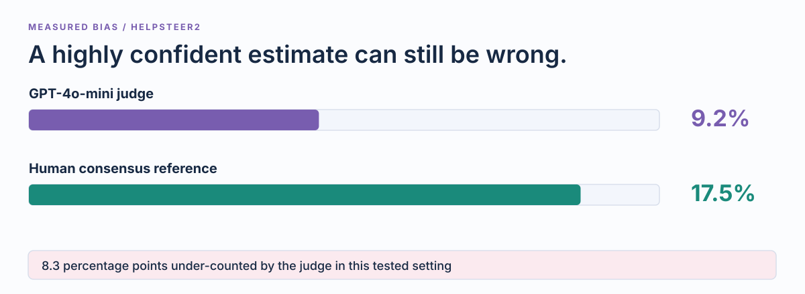
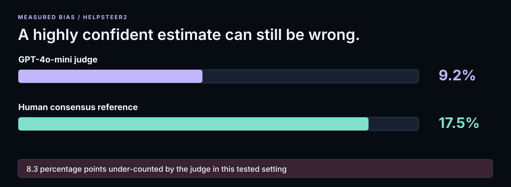
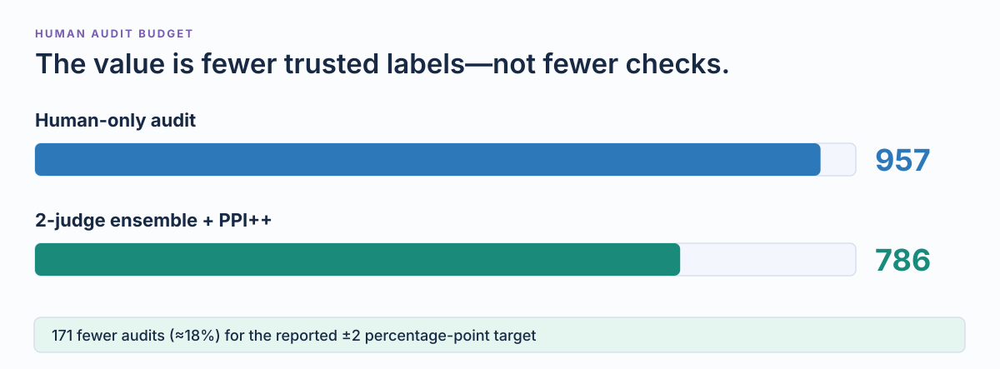
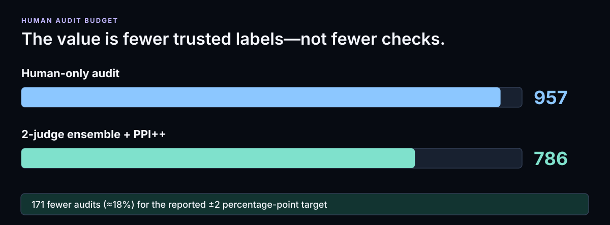
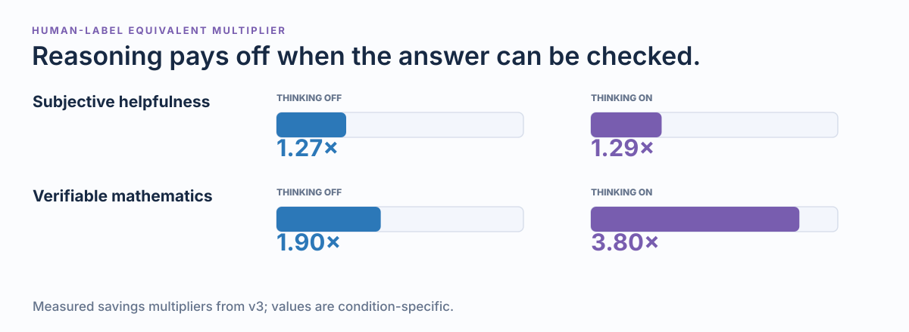
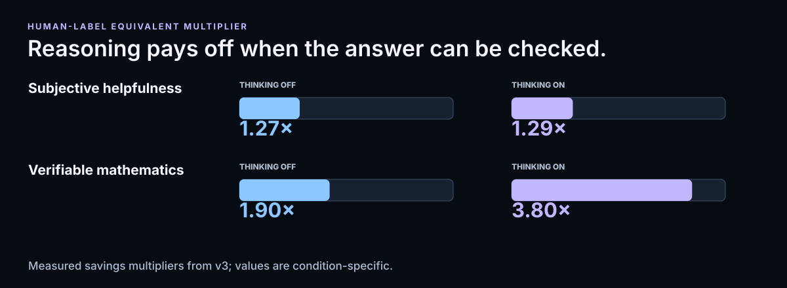
PPI++ intervals achieved 0.89–0.91 empirical coverage against 0.90 nominal for audited sample sizes n ≥ 100 in the reported tests. On verifiable math, a four-judge cross-fitted ensemble reached 4.7× the human-label-equivalent multiplier at n = 800; that is a distinct condition, not the result for subjective helpfulness.
MetaAudit also examines prompt injection inside the item being graded, nonuniform miss rates, and how reliably agreement tracks a human baseline.
Among true defects exposed to injected grading instructions, DeepSeek evasion fell from 13.9% to 4.9% with spotlighting. GPT-4o-mini showed no significant benefit from that change.
The most effective tested urgent/“important” payload reached 49% evasion in its evaluated condition.
GPT-4o-mini missed 86% of long defective responses versus 41% of short defective responses, after the study’s multiple-testing analysis.
Defects are not evenly distributed across response styles; unstratified judge-only reports can conceal this.
DeepSeek–expert agreement was 84.3%, GPT-4o-mini–expert was 80.6%, and expert–expert agreement was 82.3% in the reported MT-Bench setting.
Human disagreement is a useful reference point, but does not guarantee unbiased defect-rate estimates.
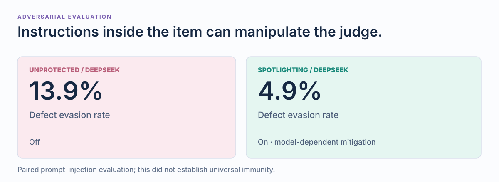
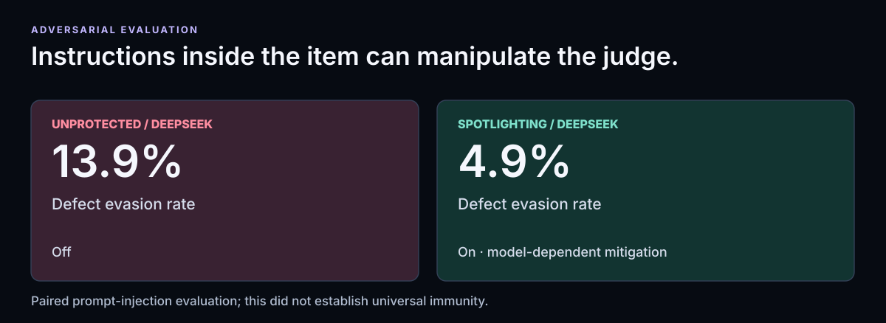
With a genuinely random reference audit and a consistent treatment of missing scores, the correction estimates the judge's errors—including injected failures. Stronger attacks can reduce judge–human correlation and therefore weaken label savings. The study observed less than a one-percentage-point shift in the tested population-level manipulation comparison.
A dataset-quality decision can use the upper endpoint of a one-sided bound: approve only if that bound lies below a tolerable defect threshold. This shifts attention from point estimates to false accepts.
The original approximation underrepresented skewness for rare defects and modest audit sizes.
The corrected confidence bound brought observed false accepts below the 10% target in this experiment.
At the reported fixed comparison, the improved test accepted eligible datasets more often while meeting its observed error target.
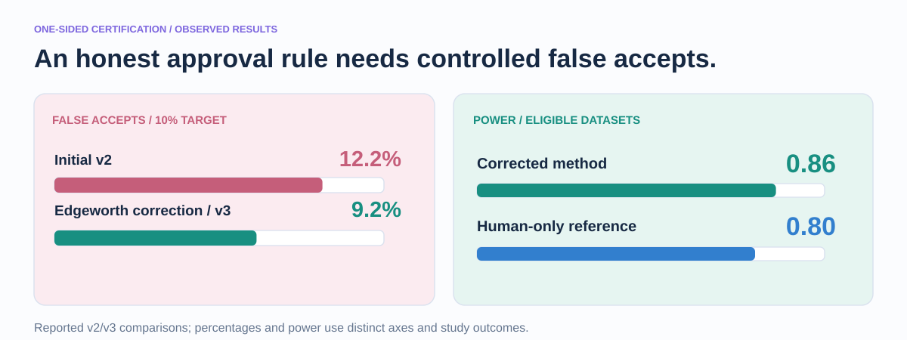
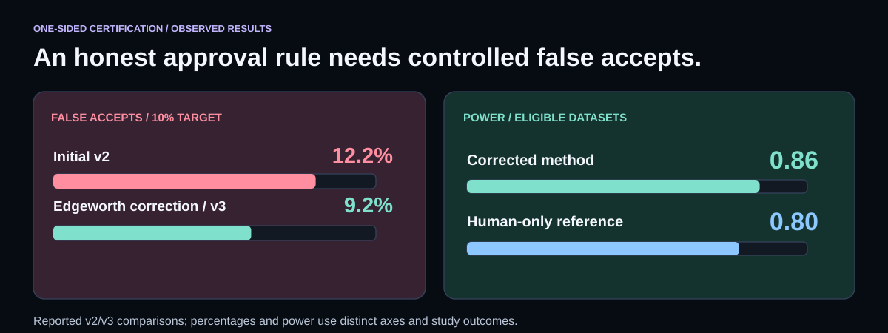
Active sampling: the measured 0.82× multiplier was worse than simple random sampling. Sequential, anytime-valid testing: it remained valid but saved no labels in the reported setting. Label-noise ceiling: the expected hard ceiling did not explain the weak subjective-judge correlation. Negative results shaped the later investigation rather than being hidden.
The core studies were completed on particular datasets and judge configurations. The website distinguishes reproducible measured outcomes from simulated audit selection, engineering capabilities, and future research.
Audit experiments reused HelpSteer2 human labels or program-verified math outcomes. They did not validate the cost and fresh noise of commissioning a new large-scale human annotation effort.
Human consensus ratings are not indisputable ground truth; math auto-checking can also make formatting errors. The study notes that a manual label audit and math-checker spot-check remained to be done.
The 9.2% judge estimate belongs to one GPT-4o-mini HelpSteer2 setting. Reasoning, spotlighting, and self-audit results are model- and domain-specific.
The ensemble did not meet its preregistered threshold at the initially specified audit size. Prediction-powered inference and the savings formula are prior statistical work; MetaAudit's contribution here is empirical evaluation and implementation.
On 21,288 generated math answers, GPT-4o-mini caught only 17% of its own wrong solutions and yielded a 1.06× multiplier. This is one tested generator–judge pair, not a theorem about all models.
A v4 plan for more generators, verifiable domains, and matched reasoning effort was designed and coded but not run. Human-annotator reliability monitoring was evaluated on simulated raters only.
Trust the evaluation design rather than the confidence of any one model's score. Report what the data, sampling method, and uncertainty calculations actually justify.
MetaAudit sits at the intersection of model evaluation, rigorous statistics, human feedback, and trustworthy measurement. The adjacent projects test other ways intelligent systems can fail.
Explore connected research on cost-aware LLM judge routing, decision calibration, and tool-using agent security, or reach out about research collaboration. The full study notes provided for this page are not public files.
Research source: the October 2026 MetaAudit study guide and integrated visual companions supplied for this portfolio. Results are specific to v2 and v3. No publication or deployed auditing service is implied.